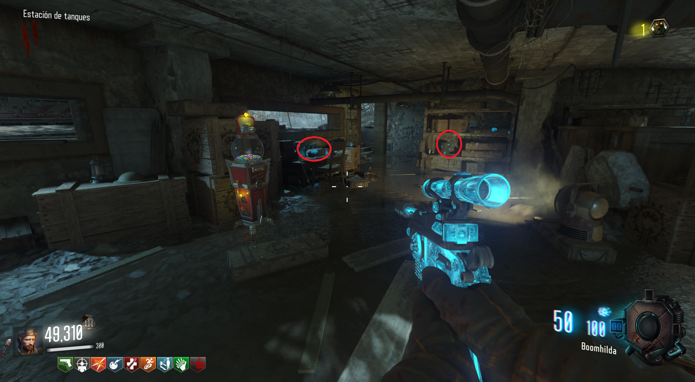
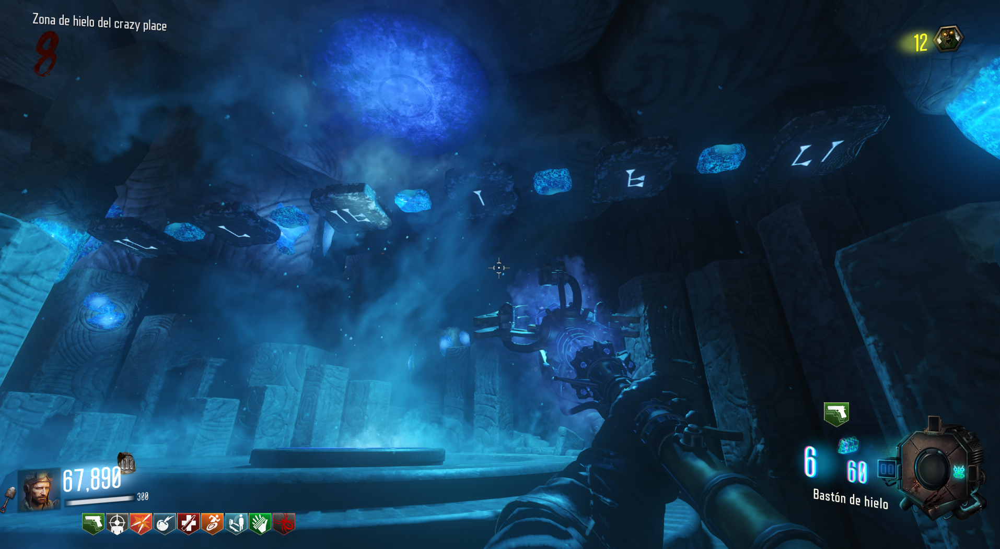
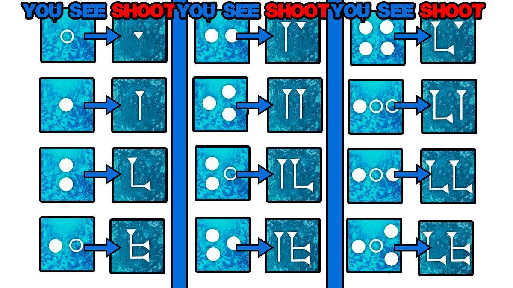
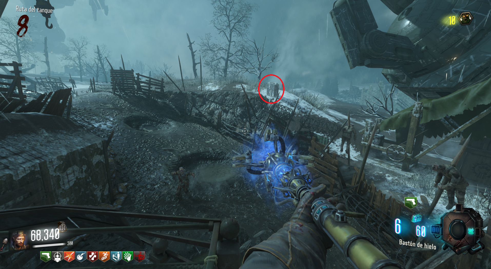

Para conseguir el bastón mejorado, deberemos de realizar una tarea en el Crazy Place y otra en Origins.
El primer paso será conseguir el disco de nuestro bastón
Estas son las posibles localizaciones:
Entrada de Tank Station.
Cerca de la caja de Tank Station

En la mesa o estantería de Tank Station.
Crazy Place:
En la zona azul del bastón de hielo veremos unos símbolos en el techo y otro en la pared.

El símbolo de la pared nos indica a qué símbolo debemos disparar. Cada vez que disparemos a una de las baldosas, el de la pared cambiará para indicarnos el siguiente.
En la imagen, la columna "YOU SEE", indica el símbolo que nos muestra la pared.
La columna "SHOOT", indica al símbolo que debemos disparar, basándonos en el de la pared.
 Origins:
Tendremos que disparar con el bastón de hielo a las 3 tumbas para que se congelen y después con un arma de balas para romperlas.
1. En la huella del gigante en generador 4.
2. En la huella del gigante, detrás de el Sitio de Excavación.

3. Fuera de Tank Station, por donde pasa el tanque y al lado del brazo del robot.
El siguiente paso es ir a la zona de excavación y mover los discos al color que corresponde al bastón.
Bajaremos y veremos una piedra que tendremos que disparar con el bastón.
Iremos al Crazy Place y pondremos el bastón en su pedestal. Lo alimentaremos matando zombies y Samantha hablará cuando se complete.